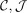
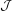
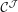
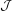
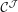
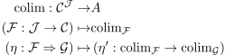
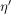
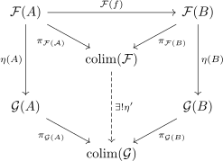

derived colim functor
1. Definition
Let  be categories, such that  admits colimits of the shape .
Then for the functor category  the derived colimit functor is defined as
admits colimits of the shape .
Then for the functor category  the derived colimit functor is defined as

where  is the morphism induced by the universal property

2. Proofsketch
functorial property follows from the uniqueness of the mediating morphism